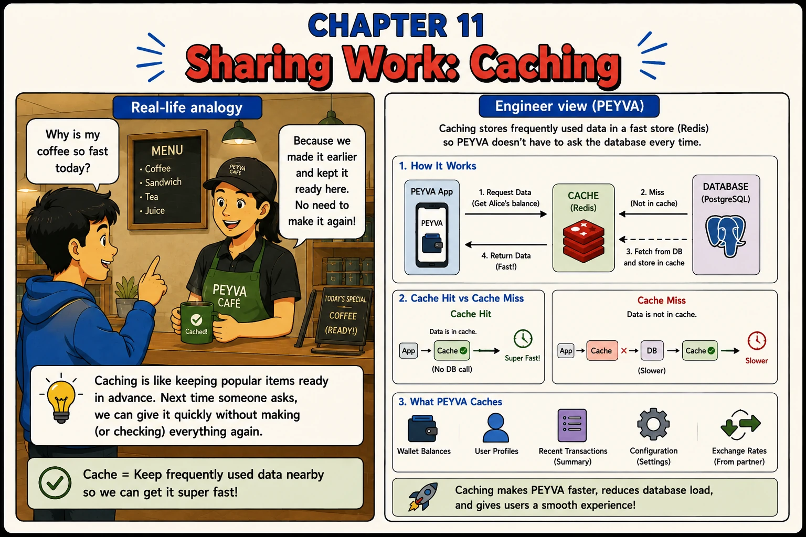

Chapter 11
Sharing Work: Caching
Caching is like keeping popular items ready in advance, so we don't make (or check) everything again.

1. What
- Cache. A small fast store holding what was asked for recently, so the next ask is quick.
- Hit and Miss. A hit answers from the cache. A miss goes to storage and keeps the answer for next time.
- Invalidation. Clearing or updating a cached value when the real one changes, so the cache never lies.
- Cache Placement. Which program holds the cache. Only one that sees every write can clear it correctly, so balances are cached in the Vault, not the copies.
- Read-Your-Writes. Someone who just paid must see the new balance. A cache that can hand them the old one has broken a promise they will notice.
2. Why
- A cache is a second copy, and any second copy can disagree with the first.
- Only the program that sees every write can clear the cache correctly. So the cache lives in the Vault, not in the copies.
- Clear it after the write is saved, never before. Clear it early and another read puts the old value straight back.
- A payment changes two accounts. Clear both.
- A balance on a page may be a moment old. The balance checked before taking money may not be cached at all.
- A cache bug never crashes. It hands back a fast, confident, wrong number.
3. How Hands-on Building in Go, change in Chapter 0
Two choices first: the language you are building in, and the system you are on. Make them in Chapter 0. The prompts below stay locked until you do.
Self-Refine. A cache bug does not crash. It returns a confident wrong number, which a passing test will not catch.
Documented in The Prompt Report: Self-Criticism, Self-Refine
Every prompt below is copied with these rules, about 634 tokens for the chapter
Build this in Go, standard library only.
Code in peyva/<component>/, one folder per component.
Money: exact decimal or integer minor units, never floating point, two decimal places.
The goal and invariants are in peyva/goal.md.
Finish with the command to run and the Portal address. Show output as a table.
The Portal is plain HTML and CSS. No framework, no build step, no dependencies.
It lives in peyva/portal/. Anything it needs from the server is Go, standard library only.
One customer's wallet at a time, never everyone's at once. A switcher at the top says whose.
New work joins the menu.
The goal and invariants are in peyva/goal.md, the look in peyva/portal/design.md.
Finish with the command to run and the Portal address. Show output as a table.
1 of 3 Build~231 tokens
Every balance enquiry reaches the Vault's storage, even for a balance read a moment ago. Three copies sit in front of the Vault, which is its own process. Add a cache of balances in memory inside the Vault, cleared whenever a payment changes an account. A map safe for several requests at once, no Redis, no library. Enquiries only: the check before a debit never reads the cache. First, two sentences on why the cache cannot live in the copies. Done when a repeated enquiry comes from cache, a payment makes the next enquiry from any copy show the new balance, and a payment's own check never reads the cache.
2 of 3 Check~213 tokens
You added a cache of balances inside the Vault, cleared when a payment changes an account. Try to make it serve an old balance. Check every path that changes a balance clears it. Consider a read and a write at once, a payment rolled back after the clear, a payment touching two accounts, and a read refilling the cache between the clear and the commit. List what you found, fix it, review again. Repeat until a review finds nothing. Done when a review finds nothing, and I know how many rounds it took and what the first version got wrong.
3 of 3 Portal~190 tokens
The Portal works, and looks like each piece was added the week it was needed. Make it presentable. Judge it against every rule in peyva/portal/design.md and the visual idea from chapter 0. Say what passes before changing anything. Fix what fails, judge again, repeat. Done when a pass finds nothing to fix.
Quick tip: A stale cache is worse than no cache.